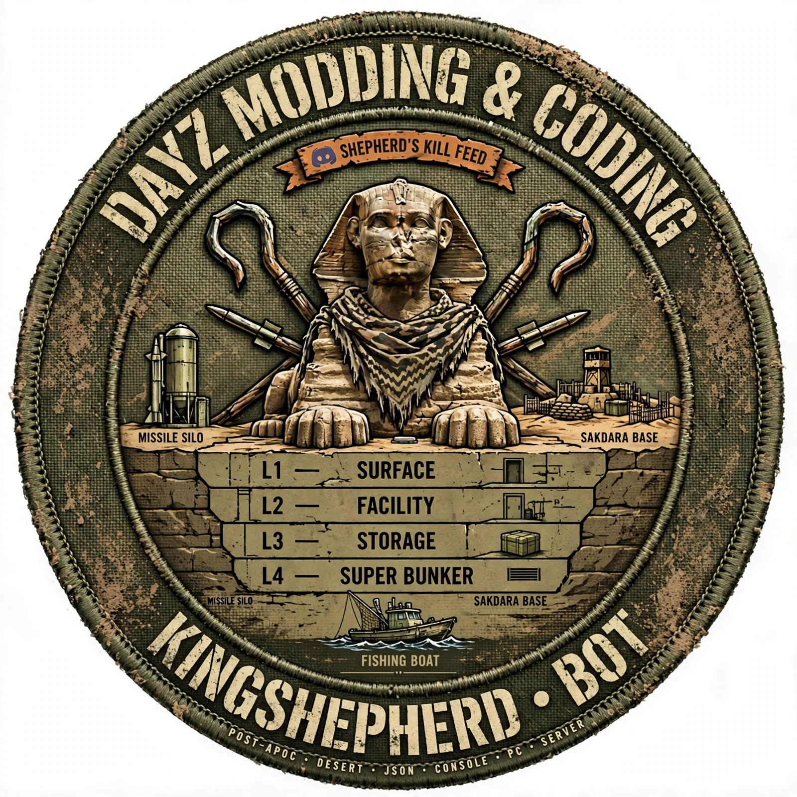

The one bot that does everything your DayZ server's Discord needs — by the DayZ Modding & Coding team.
Join the DiscordConsole & PC · Nitrado servers
Shepherd's Kill Feed runs your server's whole Discord from one bot — no juggling a pile of different bots. One install command builds the channel layout and sets everything up.
The bot carries a full catalogue of 2,629 items — weapons, clothing, gear, vehicles, military, containers and explosives — every one with its picture and a recommended price worked out for the bot's economy. Server owners browse it by number, stock their shop in a couple of clicks, and set their own prices.
Players buy from picture posts in the shop, and choose how their order arrives: a packed bag, or carried by a courier they loot. Paid in in-server currency, delivered at the next restart.
We're proving the bot live with console servers first. Ten pilot spots are open to console servers on Nitrado with 32+ slots and 20+ players daily — bring a screenshot of your player listing as proof. The pilot runs two weeks; servers that keep the bot keep it for three months in total, pilot weeks included.
PC servers: you're next — PC testing opens once the console pilot closes, and PC owners can put their name down now in the Discord.
Everything runs through our Discord. Join, head to the Shepherd's Kill Feed section, and follow the steps there — once you're set up, you add the bot to your own Discord, run one install command, and the bot builds its channels and counters itself — including your private bot-control channel, and you get the link to your own leaderboard page.
DayZ servers hosted on Nitrado — console and PC alike. Console servers are testing first; PC follows.
Pilot keepers hold the bot for three months in total. After that it rolls onto $5 a month for one server, a full month from payment.
That's the point of it — feeds, stats, economy, shop, factions, alerts and counters are all in the one bot, so most owners don't.
The DayZ Modding & Coding team — a community that helps DayZ server owners with setup, coding, JSON builds, custom traders and bases.